Nicole Erin Keffer | University of Colorado Boulder | April 28, 2026
View clickable Figma prototype
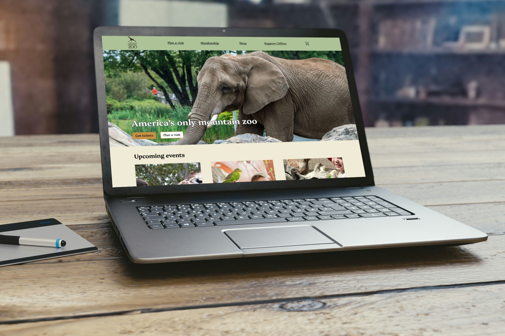
Introduction
Summary
This project involved redesigning the Cheyenne Mountain Zoo's homepage and ticket purchasing experience. The original website posed significant challenges in navigation, content overload, and an inefficient ticketing process, hindering users from completing essential tasks. Through research, usability testing, and iterative design, I developed a final redesign that enhances usability, streamlines the purchase process, and delivers a more user-centered experience.
Role
Throughout this project, I acted as the sole UX designer and researcher, managing the entire redesign process. I created low-, mid-, and high-fidelity prototypes using Figma and conducted usability testing to guide design decisions and refinements.
Challenge
The primary challenge involved reorganizing a substantial amount of information, including ticket options, policies, and general zoo details, without overwhelming users. Furthermore, the original ticketing flow was repetitive and unclear, which impeded efficient purchase completion. The objective was to streamline this experience while preserving essential information and maintaining brand identity.
Research
Usability Testing Of Current Experience
To gain insight into user interactions with the existing Cheyenne Mountain Zoo website, I conducted five usability tests focused on navigation and the ticket purchasing flow. I collected qualitative feedback during these sessions and organized key insights through affinity mapping.
Several consistent pain points emerged, including overwhelming amounts of information, excessive scrolling, and a confusing ticket selection process. Users struggled to quickly locate important details and often felt unsure about pricing, ticket types, and next steps in the flow.
These findings identified clear opportunities to simplify the user experience by prioritizing essential information, enhancing visual hierarchy, and streamlining the ticket purchasing process.
Affinity Mapping
Following the usability tests, I synthesized user feedback using affinity mapping to identify patterns in behaviors, frustrations, and expectations. This process grouped insights into key themes, including information overload, unclear navigation, inconsistent labeling, and inefficiencies within the ticket purchasing flow.
Visual organization of these insights enabled a clearer understanding of how various usability issues were interconnected and where the user experience was failing. These patterns directly informed the design priorities for the subsequent ideation and prototyping phases.
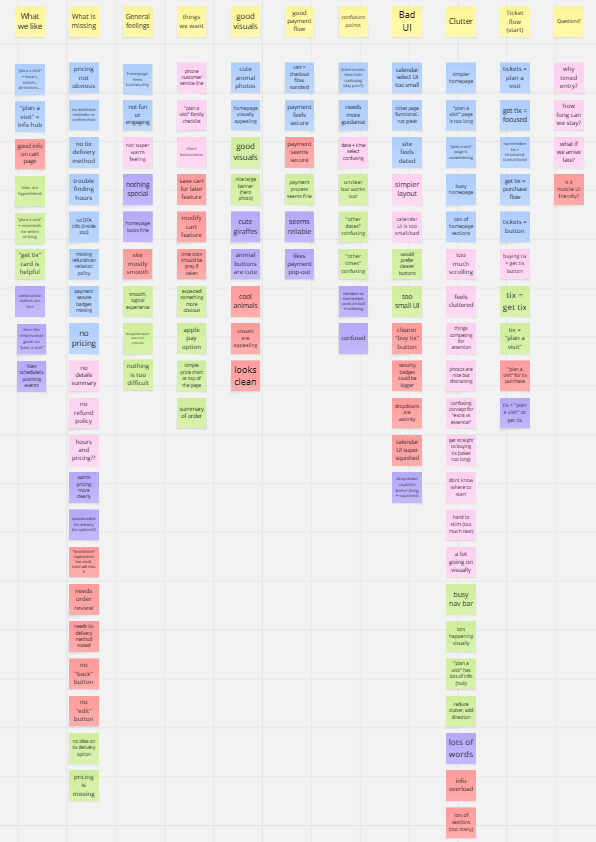
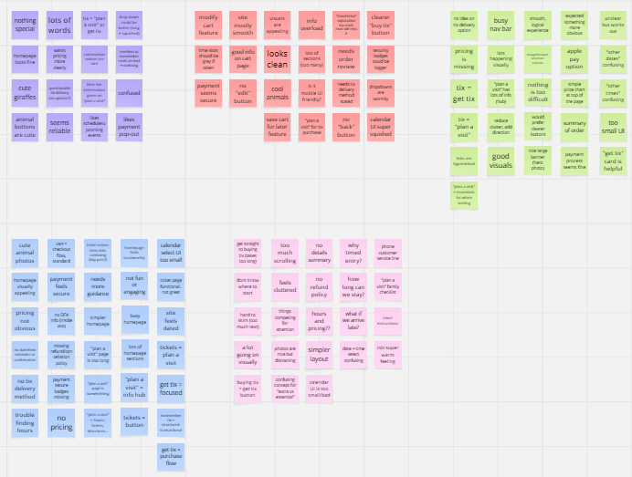
How might we streamline the ticket purchasing experience so users can quickly understand their options, navigate the flow with confidence, and complete their purchase without unnecessary friction?
Key User Insights
- Users felt overwhelmed by the amount of content and long page layouts.
- Ticket options and pricing were unclear or difficult to compare.
- The purchasing flow required too many steps and repeated information.
- Navigation made it difficult to quickly find key actions, such as "Buy Tickets."
Design
Problem Statement
First time visitors to Cheyenne Mountain Zoo need a clear and intuitive way to find essential information (tickets, hours, pricing, etc.) in order to confidently plan their visit without feeling confused or overwhelmed.
Task Flow
Drawing on insights from usability testing and affinity mapping, I redesigned the ticket purchasing flow to prioritize clarity and efficiency. The original experience required users to navigate multiple pages with unclear steps, resulting in friction and confusion.
In the updated flow, I reduced the number of steps and reorganized the process into a more logical sequence, allowing users to move from ticket selection to checkout with minimal interruptions. The goal was to create a streamlined path that keeps users oriented as they progress through the purchase.
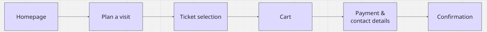
Low-Fidelity Wireframes
I initiated the design process by sketching low-fidelity paper wireframes to rapidly explore layout and flow options. At this stage, I focused on simplifying the homepage and eliminating unnecessary content that detracted from key actions such as purchasing tickets.
I also explored consolidating multiple pages into fewer steps to create a more direct and less overwhelming process for users.
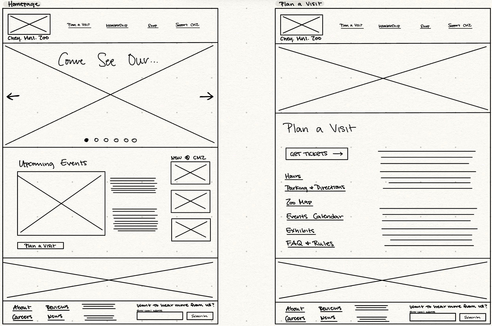
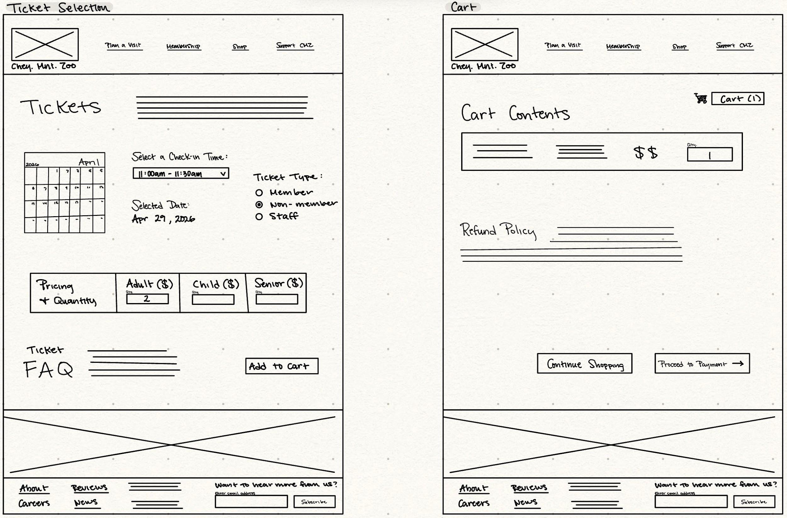
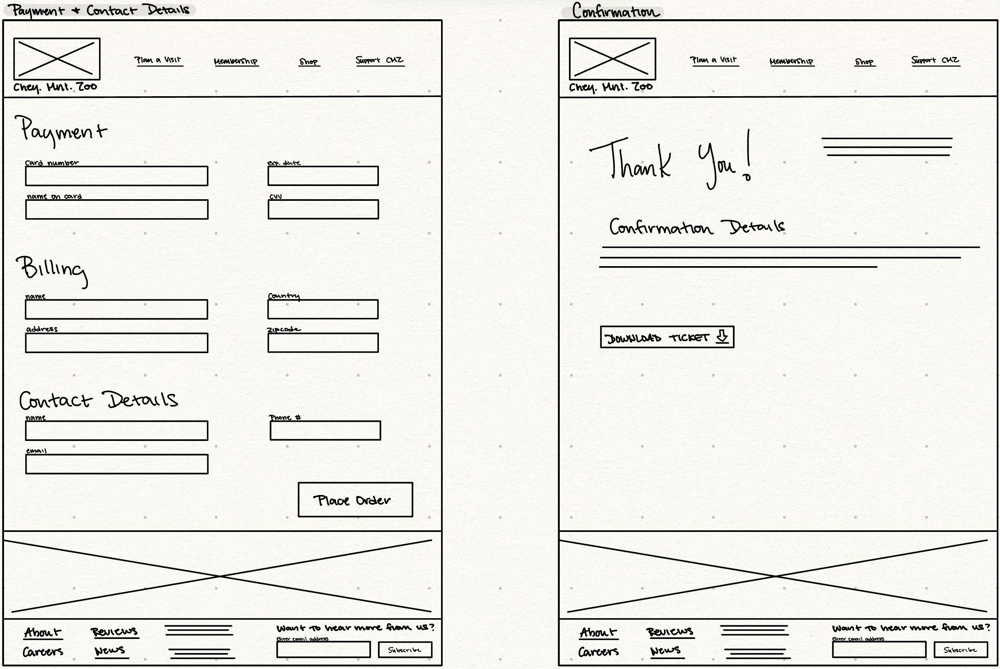
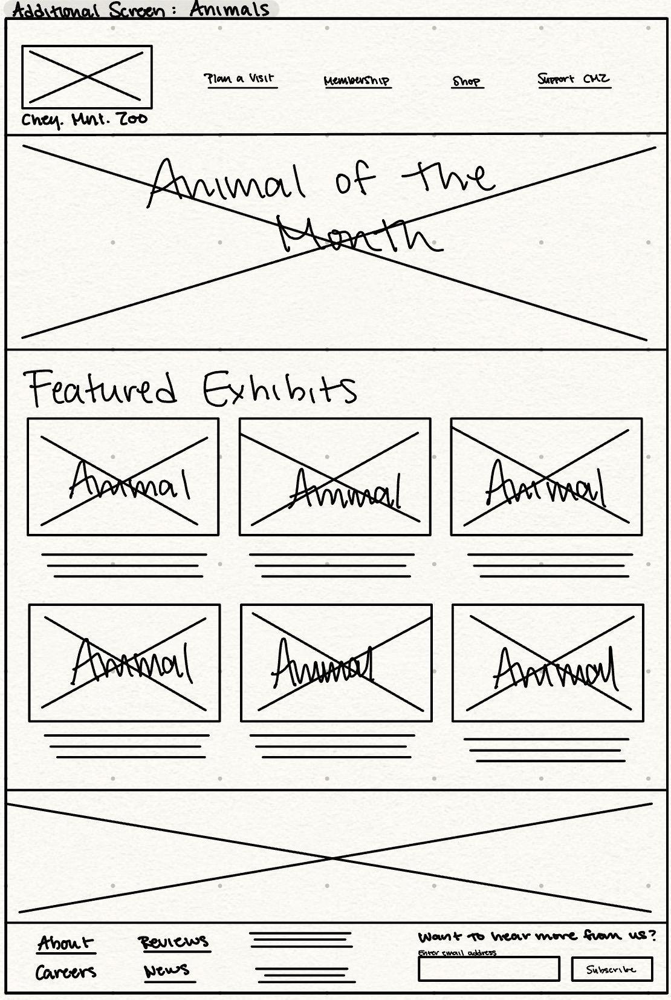
Mid-Fidelity Wireframes
After finalizing initial concepts, I translated my sketches into mid-fidelity wireframes in Figma. This enabled me to structure the layout more clearly and introduce consistent navigation elements, including a header and footer across all screens.
I also began refining the ticket purchasing experience into a more unified flow by incorporating clearer sections and progression indicators to help users understand their position in the process.
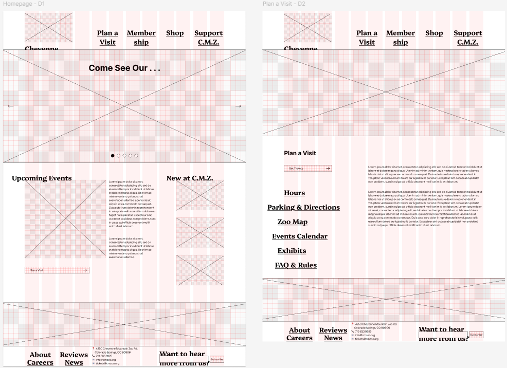
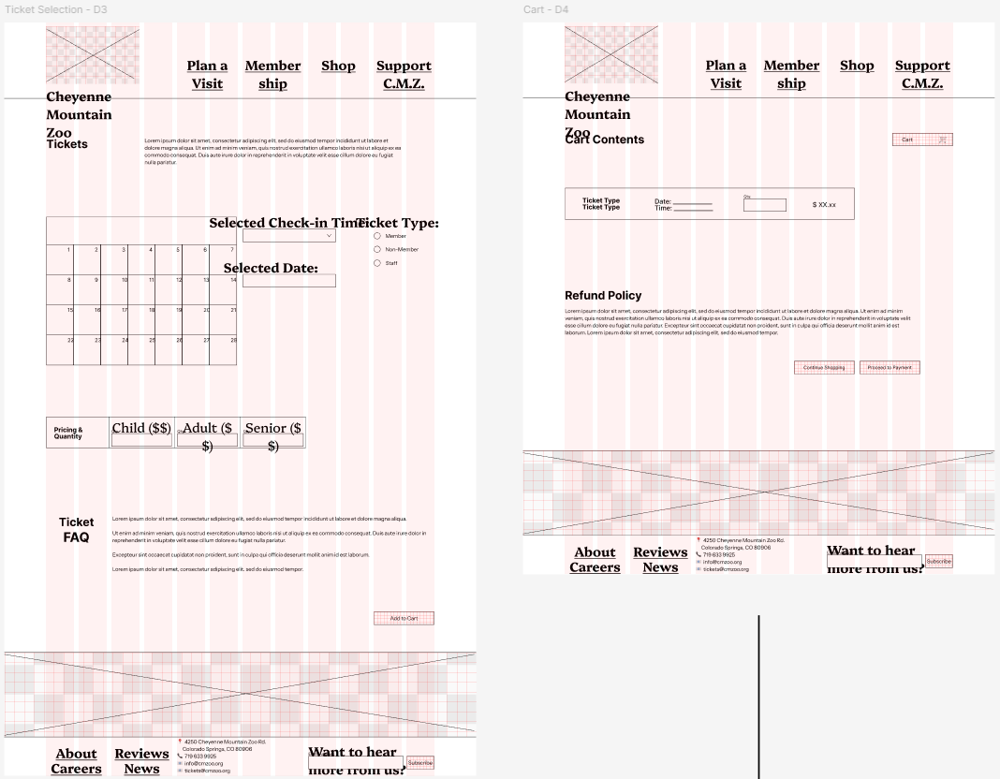
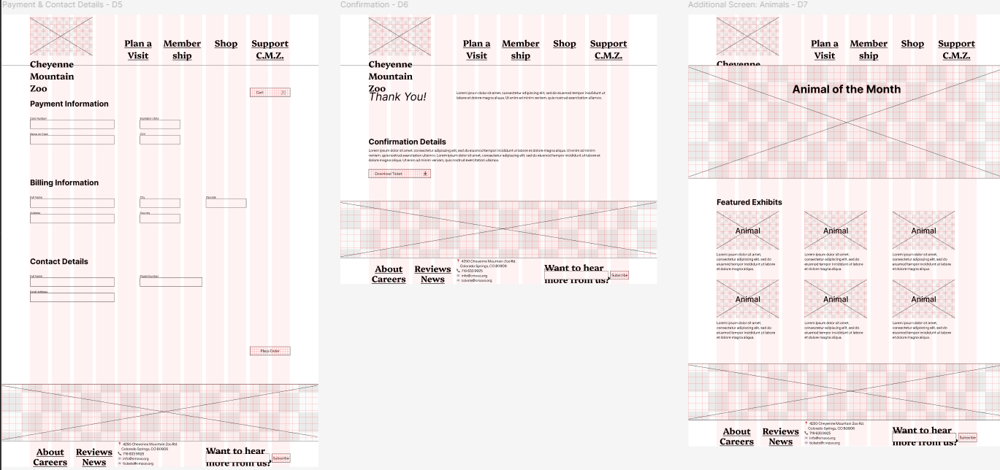
High-Fidelity Interactive Prototype: Version 1
For the high-fidelity stage, I developed an interactive prototype in Figma to simulate the complete user experience. I incorporated visual design elements, including imagery, color, and typography, to align with the zoo's branding and enhance overall clarity and usability.
I added interactivity via clickable elements, hover states, and scroll behavior, enabling testing of user navigation through the flow.
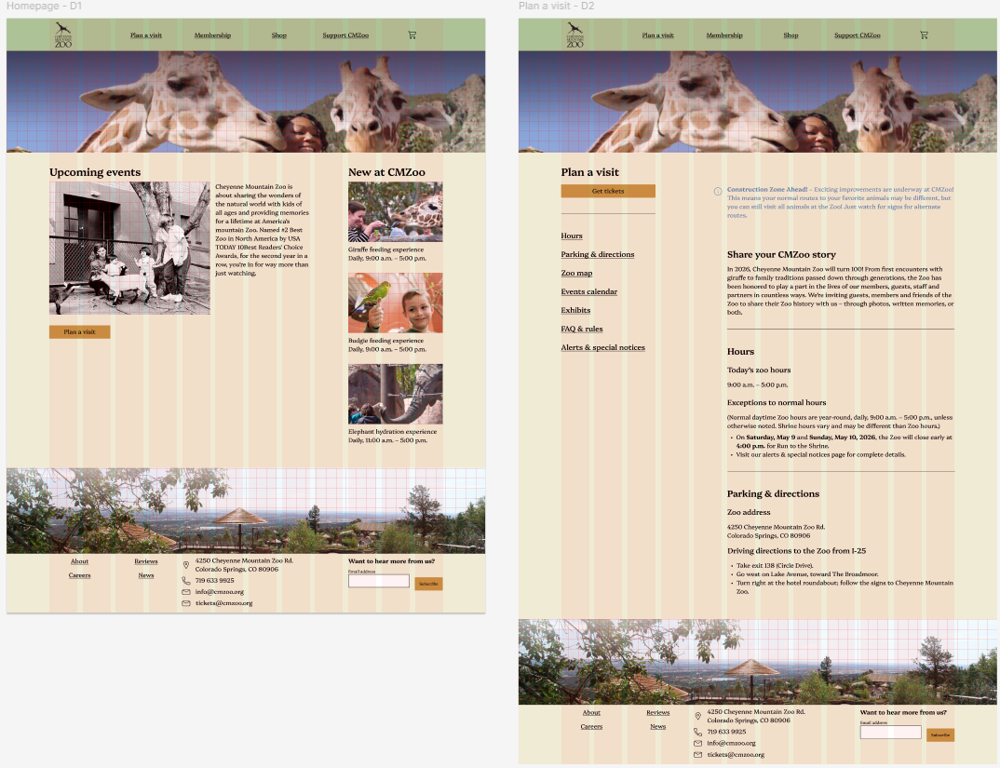
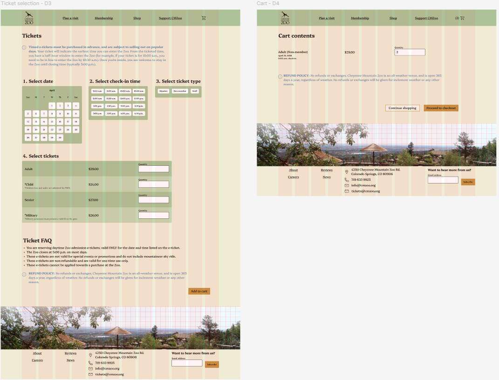
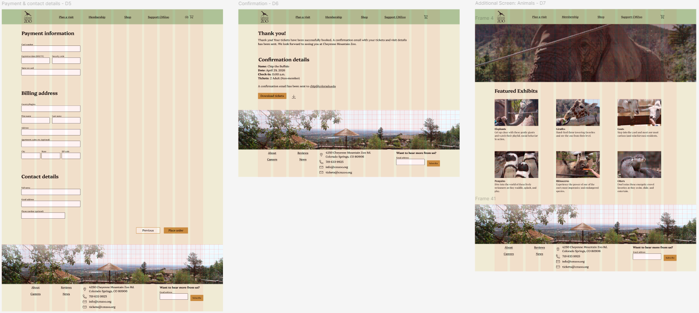
Evaluation & Results
Instructor Feedback
Throughout the design process, I received ongoing feedback that informed several key improvements. Early feedback emphasized layout consistency, prompting refinements in fonts and sizing, spacing, alignment, and overall structure across screens.
User Testing Process And Pain Points
After developing the Version 1 prototype, I conducted additional usability testing with three users to evaluate the updated ticket purchasing experience. I guided participants through key tasks and observed where confusion or hesitation occurred.
This testing revealed several clear pain points. Users felt overwhelmed by the amount of text and relied more heavily on visual cues for navigation. The interface lacked sufficient imagery to guide users, making it feel dense and less engaging. Additionally, the absence of an order summary during checkout made it difficult for users to review their selections before completing their purchase.
These findings highlighted the need to reduce cognitive load, strengthen visual guidance, and provide clearer confirmation during checkout.
Key Design Decisions
Based on user testing and feedback, I made several key design decisions to enhance the overall experience:
- Reduced text across the interface to minimize cognitive load and prevent users from feeling overwhelmed.
- Introduced more imagery to guide users visually and support navigation through the flow.
- Added an order summary during checkout to allow users to review their selections and increase confidence before completing their purchase.
Final High-Fidelity Interactive Prototype: Version 2
Building on these findings, I refined the design to create a more intuitive and visually guided experience. The final interface emphasizes visual hierarchy and clearer progression, helping users move through the ticket purchasing flow with less confusion.
The checkout process was also improved to provide stronger feedback and clarity, enabling users to review their selections and feel more confident before completing their purchase.
Overall, these changes resulted in a more streamlined and engaging experience that better supports users in completing their tasks efficiently.
Click through the Figma prototype here.
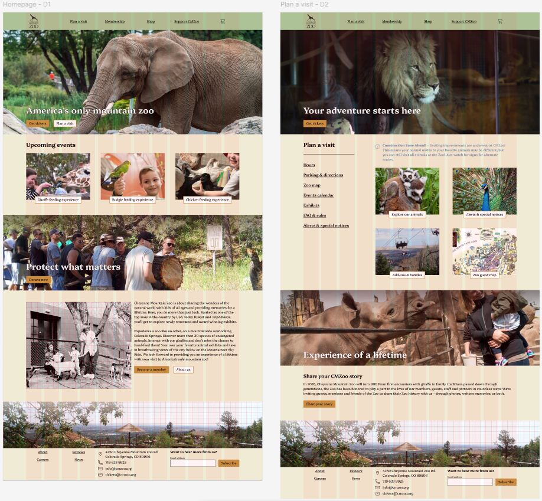
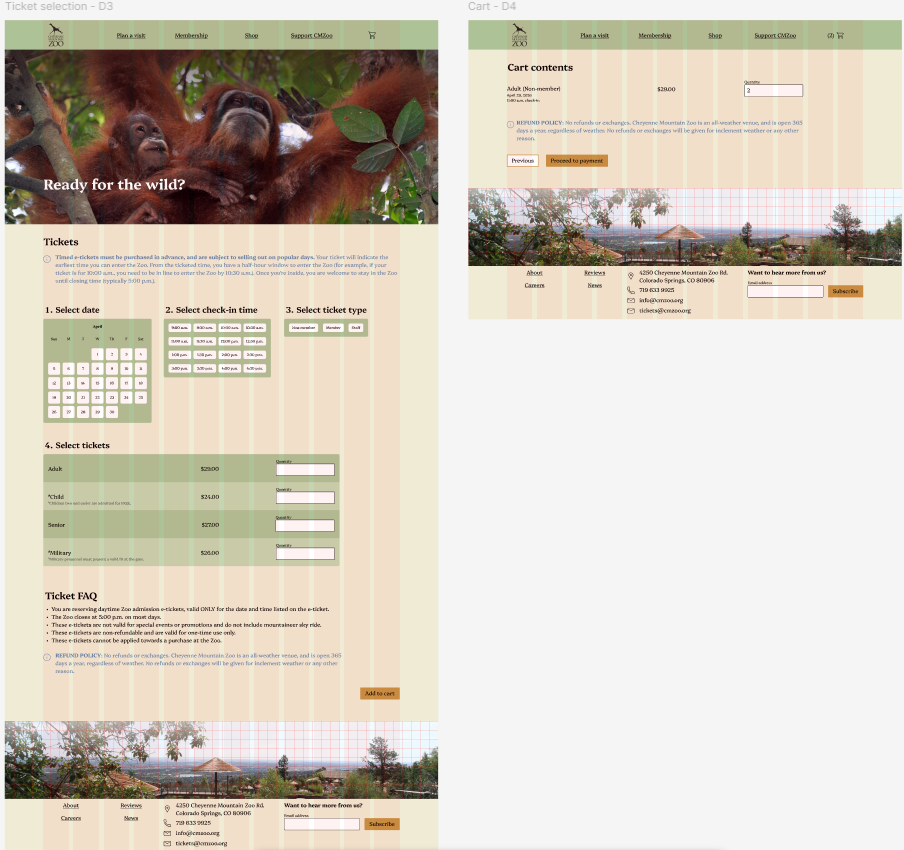
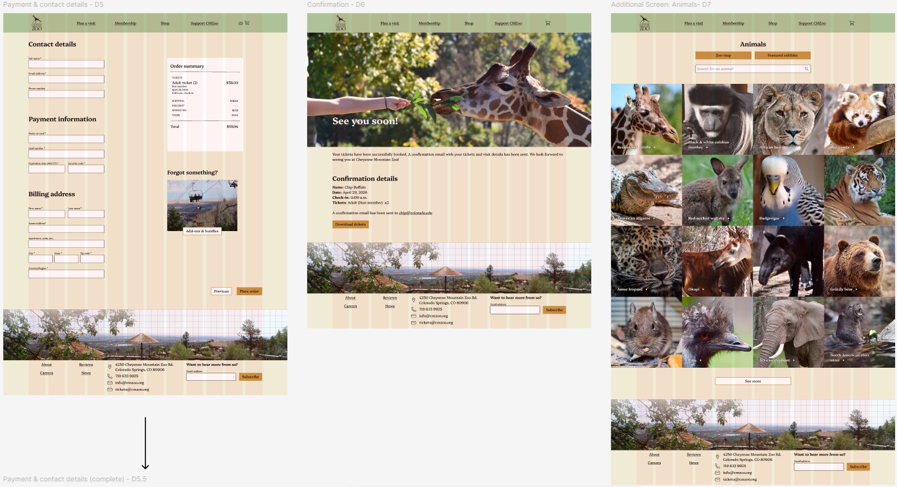
Reflection
Future Plans
If I had more time, I would further explore the site's visual design, particularly the color scheme. I used a green and cream palette, but I would like to experiment with adding a stronger secondary color to create more depth and visual interest.
I would also explore different layout options to better present information. Design is an area I'm continuing to grow in, and this project played a key role in refining my style and approach. With more time, I would push those decisions further and test more variations.
Additionally, I would use A/B testing to experiment with different approaches and gain a clearer understanding of what works best for users.
Conclusion
My biggest takeaway from this project is the extent of consideration required to make a website feel clear and easy to use. Before this project, I did not fully realize how important structure, readability, and interaction design are in shaping the user experience.
Through iteration and feedback, I learned to refine my designs and make more intentional decisions informed by how users interact with the interface. This project also helped me better understand how users navigate digital spaces and how design choices directly influence that behavior.
Overall, I enjoyed working on this project and plan to apply what I learned to future UX and design work.